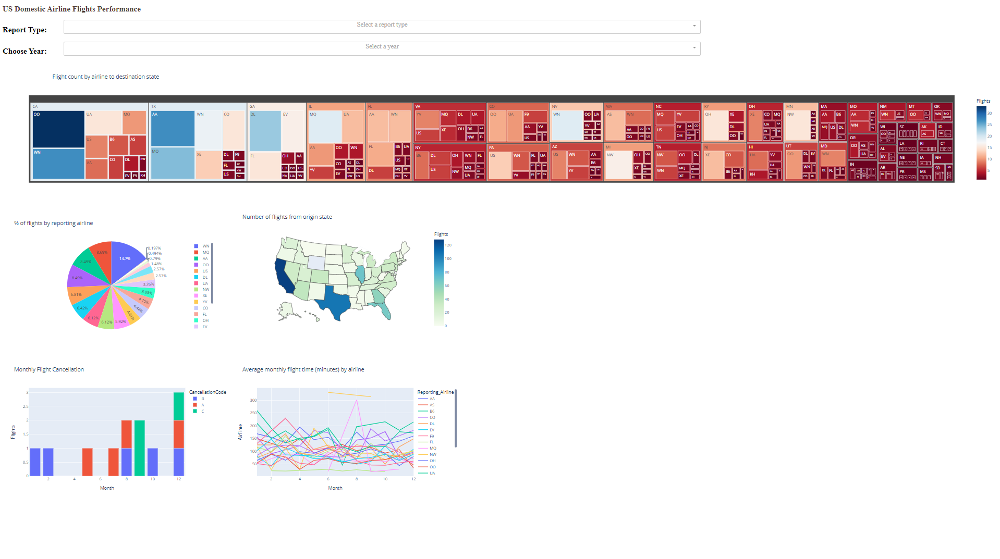
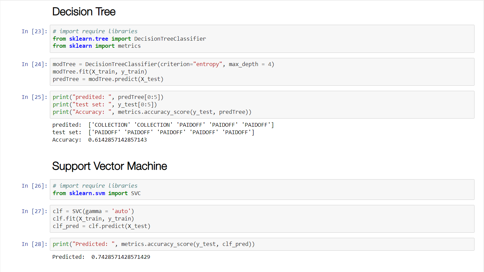

Problems that wants to find answers are
The best way to estimate the total cost for launches, by predicting successful landings of the first stage of rockets;
Where is the best place to make launches.
Summary of methodologies
Data Collection using web scraping and Space X API;
Exploratory Data Analysis (EDA), including data wrangling, data visualization and interactive visual analytics;
Machine Learning Prediction.
Summary of all results
• It was possible to collected valuable data from public sources;
• EDA allowed to identify which features are the best to predict success of launchings;
• Machine Learning Prediction showed the best model to predict which characteristics are important to drive this opportunity by the best way, using all collected data.
.

Story:
task to monitor and report US domestic airline flights performance. Goal is to analyze the performance of the reporting airline to improve flight reliability thereby improving customer reliability.
Below are the key report items,
Yearly airline performance report
Yearly average flight delay statistics
NOTE: Year range is between 2005 and 2020.
Components of the report items
Yearly airline performance report
For the chosen year provide,
Number of flights under different cancellation categories using bar chart.
Average flight time by reporting airline using line chart.
Percentage of diverted airport landings per reporting airline using pie chart.
Number of flights flying from each state using choropleth map.
Number of flights flying to each state from each reporting airline using treemap chart.
Yearly average flight delay statistics
For the chosen year provide,
Monthly average carrier delay by reporting airline for the given year.
Monthly average weather delay by reporting airline for the given year.
Monthly average national air system delay by reporting airline for the given year.
Monthly average security delay by reporting airline for the given year.
Monthly average late aircraft delay by reporting airline for the given year.
NOTE: You have worked created the same dashboard components in Flight Delay Time Statistics Dashboard section.
.

Load a historical dataset from loan.csv that contain the Data, clean the data, and apply different classification algorithm on the data
classification model algorithms :
k-Nearest Neighbour ,
Decision Tree ,
Support Vector Machine ,
Logistic Regression using IBM Watson Studio for thes analysis and jupyter Notebook
.

Get a COVID-19 pandemic Wiki page using HTTP request
/Extract COVID-19 testing data table from the wiki HTML page/
Pre-process and export the extracted data /
Get a subset of the extracted data frame/
Calculate worldwide COVID testing positive ratio/
Get a country list which reported their testing data/
Identify countries names with a specific pattern /
Pick two countries you are interested, and then review their testing data/
Compare which one of the selected countries has a larger ratio of confirmed cases to population/
Find countries with confirmed to population ratio rate less than a threshold/
.